import pandas as pd
import numpy as np
import matplotlib.pyplot as plt
import seaborn as snsEDA on Visa Dataset (Project)
A simple EDA project on the Visa dataset using Python and its libraries.
Loading the libraries and the dataset
At first, we need to import the necessary libraries.
Now we will load the dataset. You can download the dataset from here.
df = pd.read_csv('Visadataset.csv')
df.head()| case_id | continent | education_of_employee | has_job_experience | requires_job_training | no_of_employees | yr_of_estab | region_of_employment | prevailing_wage | unit_of_wage | full_time_position | case_status | |
|---|---|---|---|---|---|---|---|---|---|---|---|---|
| 0 | EZYV01 | Asia | High School | N | N | 14513 | 2007 | West | 592.2029 | Hour | Y | Denied |
| 1 | EZYV02 | Asia | Master's | Y | N | 2412 | 2002 | Northeast | 83425.6500 | Year | Y | Certified |
| 2 | EZYV03 | Asia | Bachelor's | N | Y | 44444 | 2008 | West | 122996.8600 | Year | Y | Denied |
| 3 | EZYV04 | Asia | Bachelor's | N | N | 98 | 1897 | West | 83434.0300 | Year | Y | Denied |
| 4 | EZYV05 | Africa | Master's | Y | N | 1082 | 2005 | South | 149907.3900 | Year | Y | Certified |
df.shape(25480, 12)Summary of the dataset
df.describe()| no_of_employees | yr_of_estab | prevailing_wage | |
|---|---|---|---|
| count | 25480.000000 | 25480.000000 | 25480.000000 |
| mean | 5667.043210 | 1979.409929 | 74455.814592 |
| std | 22877.928848 | 42.366929 | 52815.942327 |
| min | -26.000000 | 1800.000000 | 2.136700 |
| 25% | 1022.000000 | 1976.000000 | 34015.480000 |
| 50% | 2109.000000 | 1997.000000 | 70308.210000 |
| 75% | 3504.000000 | 2005.000000 | 107735.512500 |
| max | 602069.000000 | 2016.000000 | 319210.270000 |
The describe() method only shows the numerical columns.
Checking Null values and Data types
df.info()<class 'pandas.core.frame.DataFrame'>
RangeIndex: 25480 entries, 0 to 25479
Data columns (total 12 columns):
# Column Non-Null Count Dtype
--- ------ -------------- -----
0 case_id 25480 non-null object
1 continent 25480 non-null object
2 education_of_employee 25480 non-null object
3 has_job_experience 25480 non-null object
4 requires_job_training 25480 non-null object
5 no_of_employees 25480 non-null int64
6 yr_of_estab 25480 non-null int64
7 region_of_employment 25480 non-null object
8 prevailing_wage 25480 non-null float64
9 unit_of_wage 25480 non-null object
10 full_time_position 25480 non-null object
11 case_status 25480 non-null object
dtypes: float64(1), int64(2), object(9)
memory usage: 2.3+ MBdf.isnull().sum()case_id 0
continent 0
education_of_employee 0
has_job_experience 0
requires_job_training 0
no_of_employees 0
yr_of_estab 0
region_of_employment 0
prevailing_wage 0
unit_of_wage 0
full_time_position 0
case_status 0
dtype: int64Exploring the data
For exploring the data, we need to separate the numerical and categorical columns.
# Create new DataFrames based on data types
numerical_features = df.select_dtypes(exclude=['object'])
categorical_features = df.select_dtypes(include=['object'])
# Print the results
print(f'We have {len(numerical_features.columns)} numerical features : {numerical_features.columns.tolist()}')
print(f'\nWe have {len(categorical_features.columns)} categorical features : {categorical_features.columns.tolist()}')We have 3 numerical features : ['no_of_employees', 'yr_of_estab', 'prevailing_wage']
We have 9 categorical features : ['case_id', 'continent', 'education_of_employee', 'has_job_experience', 'requires_job_training', 'region_of_employment', 'unit_of_wage', 'full_time_position', 'case_status']If we want to know the counts of the unique values in a categorical column, we can use the value_counts() method.
df['continent'].value_counts()continent
Asia 16861
Europe 3732
North America 3292
South America 852
Africa 551
Oceania 192
Name: count, dtype: int64If we want to see the result as percentage, we can set the normalize parameter to True. We can do this for all the categorical columns.
from IPython.display import display
for col in categorical_features:
print(f"\n🔹 Feature: {col.upper()}")
# Calculate, round to 2 decimal places, and convert to a DataFrame
summary_df = (df[col].value_counts(normalize=True) * 100).round(2).to_frame(name='Percentage (%)')
summary_df.index.name = 'Category'
# Render the formatted table
display(summary_df)
🔹 Feature: CASE_ID| Percentage (%) | |
|---|---|
| Category | |
| EZYV01 | 0.0 |
| EZYV02 | 0.0 |
| EZYV03 | 0.0 |
| EZYV04 | 0.0 |
| EZYV05 | 0.0 |
| ... | ... |
| EZYV25476 | 0.0 |
| EZYV25477 | 0.0 |
| EZYV25478 | 0.0 |
| EZYV25479 | 0.0 |
| EZYV25480 | 0.0 |
25480 rows × 1 columns
🔹 Feature: CONTINENT| Percentage (%) | |
|---|---|
| Category | |
| Asia | 66.17 |
| Europe | 14.65 |
| North America | 12.92 |
| South America | 3.34 |
| Africa | 2.16 |
| Oceania | 0.75 |
🔹 Feature: EDUCATION_OF_EMPLOYEE| Percentage (%) | |
|---|---|
| Category | |
| Bachelor's | 40.16 |
| Master's | 37.81 |
| High School | 13.42 |
| Doctorate | 8.60 |
🔹 Feature: HAS_JOB_EXPERIENCE| Percentage (%) | |
|---|---|
| Category | |
| Y | 58.09 |
| N | 41.91 |
🔹 Feature: REQUIRES_JOB_TRAINING| Percentage (%) | |
|---|---|
| Category | |
| N | 88.4 |
| Y | 11.6 |
🔹 Feature: REGION_OF_EMPLOYMENT| Percentage (%) | |
|---|---|
| Category | |
| Northeast | 28.24 |
| South | 27.54 |
| West | 25.85 |
| Midwest | 16.90 |
| Island | 1.47 |
🔹 Feature: UNIT_OF_WAGE| Percentage (%) | |
|---|---|
| Category | |
| Year | 90.12 |
| Hour | 8.47 |
| Week | 1.07 |
| Month | 0.35 |
🔹 Feature: FULL_TIME_POSITION| Percentage (%) | |
|---|---|
| Category | |
| Y | 89.38 |
| N | 10.62 |
🔹 Feature: CASE_STATUS| Percentage (%) | |
|---|---|
| Category | |
| Certified | 66.79 |
| Denied | 33.21 |
We can use ydata-profiling to automate this process.
Insights
- case_id have unique vlaues for each column which can be dropped as it it of no importance
- continent column is highly biased towards asia. hence we can combine other categories to form a single category.
- unit_of_wage seems to be an important column as most of them are yearly contracts.
Univariate Analysis
We will do univariate analysis on the numerical columns and categorical features separately.
### Numerical Features
import math
num_cols = numerical_features.columns
total_plots = len(num_cols)
num_rows = math.ceil(total_plots / 2)
fig, ax= plt.subplots(num_rows, 2, figsize=(15, 5*num_rows))
fig.suptitle('Univariate Analysis of Numerical Features', fontsize=20, fontweight='bold', alpha=0.8)
axes = ax.flatten() if total_plots > 1 else [ax]
for i in range(len(num_cols)):
sns.kdeplot(data=df, x=num_cols[i], color='blue', ax=axes[i])
axes[i].set_xlabel(num_cols[i])
for j in range(total_plots, len(axes)):
fig.delaxes(axes[j])
fig.tight_layout()
fig.subplots_adjust(top=0.95)
plt.show()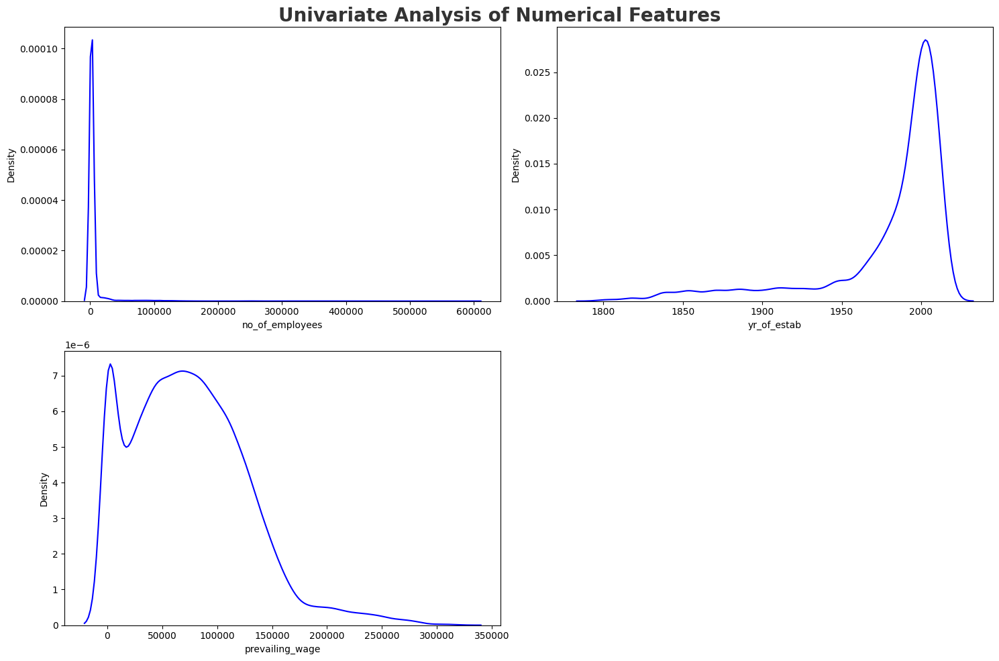
Feature-by-Feature Insights
no_of_employees: Highly right-skewed; most are very small companies, but a few massive corporate outliers stretch the tail past 600,000.yr_of_estab: Left-skewed; most companies are relatively modern (established 1990–2010), with a long tail of much older businesses.prevailing_wage: Bimodal distribution with two distinct peaks representing hourly wages (near $0) and standard yearly salaries ($50k–$100k).
Categorical Features
categorical_features=categorical_features.drop(columns=['case_id'])
cat_cols = categorical_features.columns
total_plots = len(cat_cols)
num_rows = math.ceil(total_plots / 3)
fig, ax = plt.subplots(num_rows, 3, figsize=(20, 5*num_rows))
fig.suptitle('Univariate Analysis of Categorical Features', fontsize=20, fontweight='bold', alpha=0.8)
axes = ax.flatten() if total_plots > 1 else [ax]
for i in range(len(cat_cols)):
sns.countplot(data=df, x=cat_cols[i], ax=axes[i])
axes[i].set_xlabel(cat_cols[i])
for j in range(total_plots, len(axes)):
fig.delaxes(axes[j])
fig.tight_layout()
fig.subplots_adjust(top=0.95)
plt.show()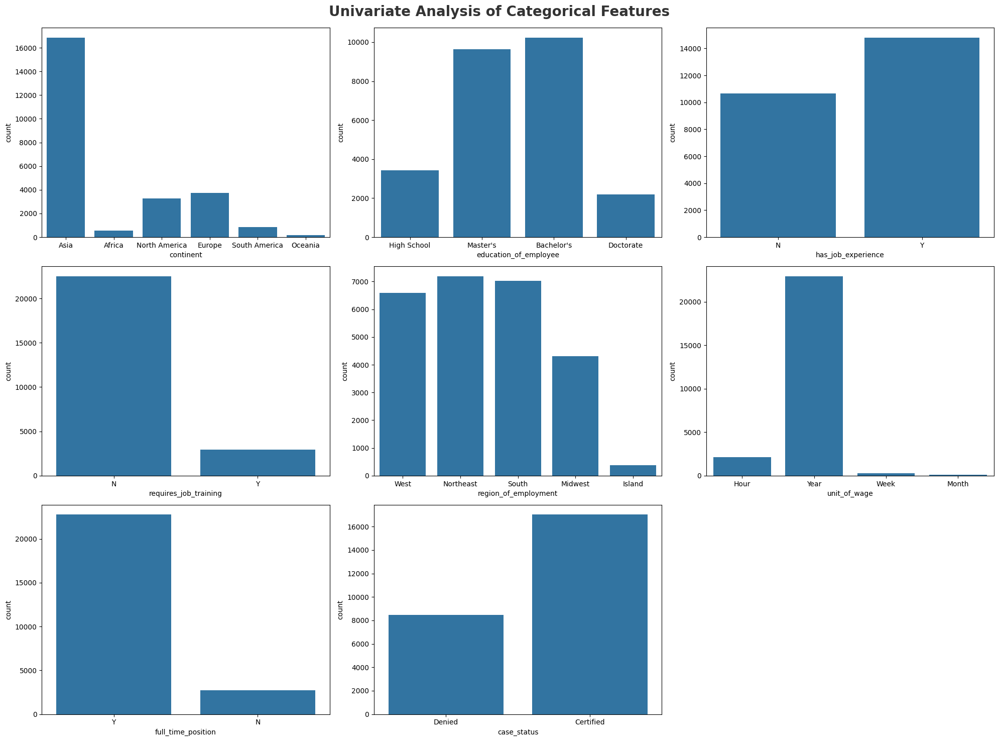
Feature-by-Feature Insights
continent: Applicants are overwhelmingly from Asia (16,000+), with Europe and North America trailing far behind.education_of_employee: The majority hold a Bachelor’s or Master’s degree, split almost evenly at roughly 10,000 each.has_job_experience: Applicants with job experience (Y) outnumber those without (N) by a moderate margin.requires_job_training: Almost all positions (22,000+) do not require additional job training (N).region_of_employment: Jobs are fairly evenly distributed across the West, Northeast, and South, with very few in the Islands.unit_of_wage: The vast majority of salaries are calculated on a Yearly basis, making this feature highly imbalanced.full_time_position: Nearly all applications are for full-time positions (Y), with very few part-time roles represented.case_status: The approval rate is roughly 2-to-1, with about 17,000 cases Certified and 8,500 Denied.
Multivariate Analysis
At first, we will separate the discrete and continuous features from numerical features.
discrete_features = [col for col in numerical_features.columns if numerical_features[col].nunique() <= 25]
continuous_features = [col for col in numerical_features.columns if numerical_features[col].nunique() > 25]
discrete_features=numerical_features[discrete_features]
continuous_features=numerical_features[continuous_features]
print(f'We have {len(discrete_features.columns)} discrete features : {list(discrete_features.columns)}')
print(f'\nWe have {len(continuous_features.columns)} continuous features : {list(continuous_features.columns)}')We have 0 discrete features : []
We have 3 continuous features : ['no_of_employees', 'yr_of_estab', 'prevailing_wage']Checking Multicollinearity
If we want to check the correlation between the numerical features, we can use the corr() method.
df.corr(numeric_only=True)| no_of_employees | yr_of_estab | prevailing_wage | |
|---|---|---|---|
| no_of_employees | 1.000000 | -0.017770 | -0.009523 |
| yr_of_estab | -0.017770 | 1.000000 | 0.012342 |
| prevailing_wage | -0.009523 | 0.012342 | 1.000000 |
But what about the categorical features? We will use the Chi-Square test to check the correlation between the categorical features.
In statistics, the Null Hypothesis assumes that the two columns have no relationship at all. We assume the alpha(Significance level) to be 0.05. Here alpha is the threshold we set for rejecting the null hypothesis.
P-value is the result of the chi-square test. If the p-value is less than alpha, we reject the null hypothesis and conclude that there is a significant association between the feature and the target variable. Otherwise, we fail to reject the null hypothesis, suggesting no significant association between the feature and the target variable. In that case, we may consider dropping the feature from our model.
from scipy.stats import chi2_contingency
chi2_results = []
for feature in cat_cols:
crosstab = pd.crosstab(df['case_status'], df[feature])
chi2, p_value, dof, expected = chi2_contingency(crosstab)
if p_value < 0.05: # Checking significance level (alpha = 0.05)
decision = 'Reject Null (Significant Relationship)'
else:
decision = 'Fail to Reject (No Relationship)'
chi2_results.append({
'Feature': feature,
'P-Value': p_value,
'Hypothesis Result': decision
})
result = pd.DataFrame(chi2_results)
result| Feature | P-Value | Hypothesis Result | |
|---|---|---|---|
| 0 | continent | 8.828798e-74 | Reject Null (Significant Relationship) |
| 1 | education_of_employee | 0.000000e+00 | Reject Null (Significant Relationship) |
| 2 | has_job_experience | 1.922560e-206 | Reject Null (Significant Relationship) |
| 3 | requires_job_training | 1.855647e-01 | Fail to Reject (No Relationship) |
| 4 | region_of_employment | 2.338664e-63 | Reject Null (Significant Relationship) |
| 5 | unit_of_wage | 5.193385e-240 | Reject Null (Significant Relationship) |
| 6 | full_time_position | 4.469975e-02 | Reject Null (Significant Relationship) |
| 7 | case_status | 0.000000e+00 | Reject Null (Significant Relationship) |
Insights:
Here we can see that the ‘requires_job_training’ feature has a p-value of 0.18, which is greater than our alpha threshold of 0.05. So there is no relationship between the ‘requires_job_training’ feature and the target variable ‘case_status’. Hence we can drop this feature from our model.
Checking Null values
df.isnull().sum()case_id 0
continent 0
education_of_employee 0
has_job_experience 0
requires_job_training 0
no_of_employees 0
yr_of_estab 0
region_of_employment 0
prevailing_wage 0
unit_of_wage 0
full_time_position 0
case_status 0
dtype: int64Working with coninuous features
cont_cols = continuous_features.columns
num_rows = len(cont_cols)
clr1 = ['#1E90FF', '#DC143C']
fig, ax = plt.subplots(num_rows, 2, figsize=(10, num_rows*4))
fig.suptitle('Distribution of Numerical Features By Case Status', fontsize=20, fontweight='bold', alpha=0.8)
for i, col in enumerate(cont_cols):
sns.boxplot(data=df, x='case_status', y=col, hue='case_status', palette=clr1, ax=ax[i, 0])
ax[i, 0].set_title(f'Box Plot of {col}', fontsize=14)
sns.histplot(data=df, x=col, hue='case_status', bins=20, multiple='stack', palette=clr1, ax=ax[i, 1], kde=True, legend=True)
ax[i,1].set_title(f'Histogram of {col}', fontsize=14)
fig.tight_layout()
fig.subplots_adjust(top=0.92)
plt.show()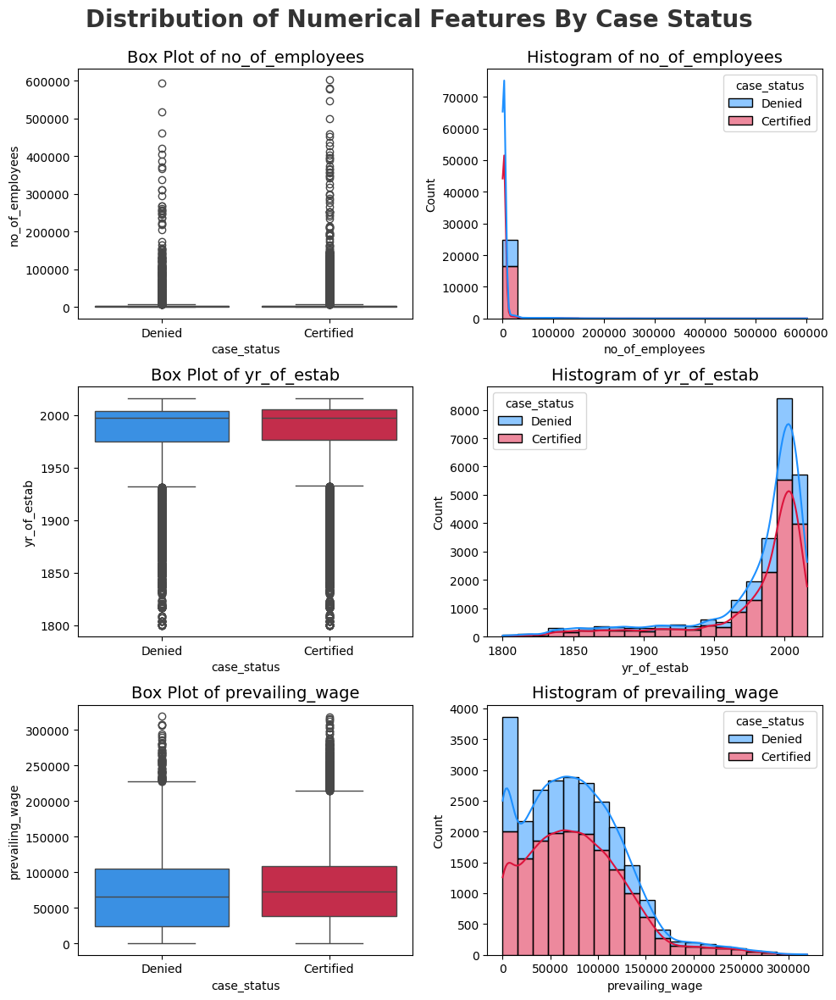
Initial Analysis Report
- No of Employees has many outliers which can be Handled in Feature Engineering and
no_of_employeesis Right Skewed. yr_of_estabis left skewed and some outliers below the lower bound of Box plot.prevailing_wageis right skewed with outliers above upper bound of box plot.- There are No missing values in the dataset.
- The
case_idcolumn can be deleted because each row has unique values. - The
case_statuscolumn is the target to predict. - In the Categorical column, features can be made Binary numerical in feature Encoding
Visualizing the target variable
percentage = df['case_status'].value_counts(normalize=True) * 100
labels = percentage.index
fig, ax = plt.subplots(figsize=(10, 6))
colors = ['#1188ff', '#e63a2a']
explode = (0, 0.1)
ax.pie(percentage, labels=labels, autopct='%1.1f%%', startangle=90, colors=colors, explode=explode, shadow=True)
ax.set_title('Distribution of Case Status', fontsize=16, fontweight='bold')
plt.show()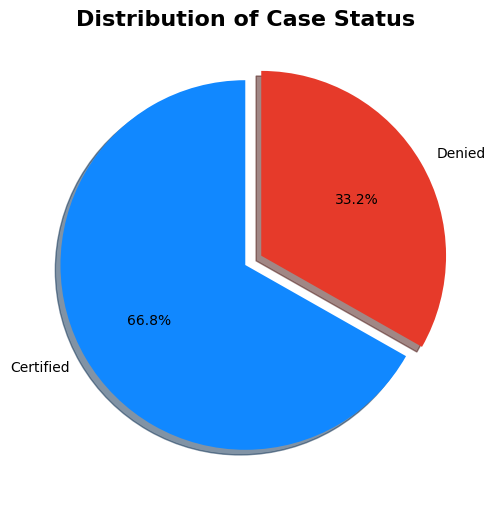
From the chart it is seen that the Target Variable is Imbalanced
What is imbalanced data?
Imbalanced data occurs when the target class has an uneven distribution of observations. In this dataset, there is a moderate imbalance, as the Certified cases (66.8%) have a significantly higher count than the Denied cases (33.2%).
Now we will try to answer some questions based on the dataset.
## Does applicant Continent has any impact on Visa status ?
(df.groupby('continent')['case_status'].value_counts(normalize=True).to_frame(name='percentage(%)')*100).round(2)| percentage(%) | ||
|---|---|---|
| continent | case_status | |
| Africa | Certified | 72.05 |
| Denied | 27.95 | |
| Asia | Certified | 65.31 |
| Denied | 34.69 | |
| Europe | Certified | 79.23 |
| Denied | 20.77 | |
| North America | Certified | 61.88 |
| Denied | 38.12 | |
| Oceania | Certified | 63.54 |
| Denied | 36.46 | |
| South America | Certified | 57.86 |
| Denied | 42.14 |
plt.figure(figsize=(10, 6))
sns.countplot(data=df, x='continent', hue='case_status', palette='Accent', edgecolor='black')
plt.title('Continent vs Visa Status', fontsize=16, fontweight='bold')
plt.xlabel('Continent')
plt.ylabel('Count')
plt.legend(title='Visa Status', fancybox=True)
plt.show()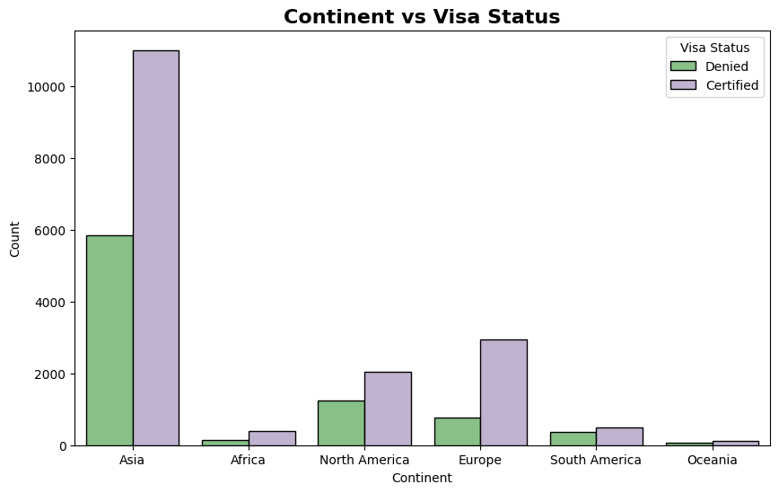
If we want to see only the certified cases by continent, we can do the following process.
pct_df = pd.crosstab(df['continent'], df['case_status'], normalize='index') * 100
cert_pct = pct_df['Certified']
fig, ax = plt.subplots(figsize=(14, 7))
bars = ax.bar(cert_pct.index, cert_pct.values, color='lightgreen', edgecolor='black')
ax.bar_label(bars, fmt='%.1f%%', padding=3, fontsize=12, fontweight='bold')
ax.set_title("Percentage of Certified Cases by Continent", fontsize=16, fontweight='bold')
ax.set_xlabel('Continent', fontsize=14)
ax.set_ylabel('Percentage (%)', fontsize=14)
ax.tick_params(axis='x', rotation=0, labelsize=12)
fig.tight_layout()
plt.show()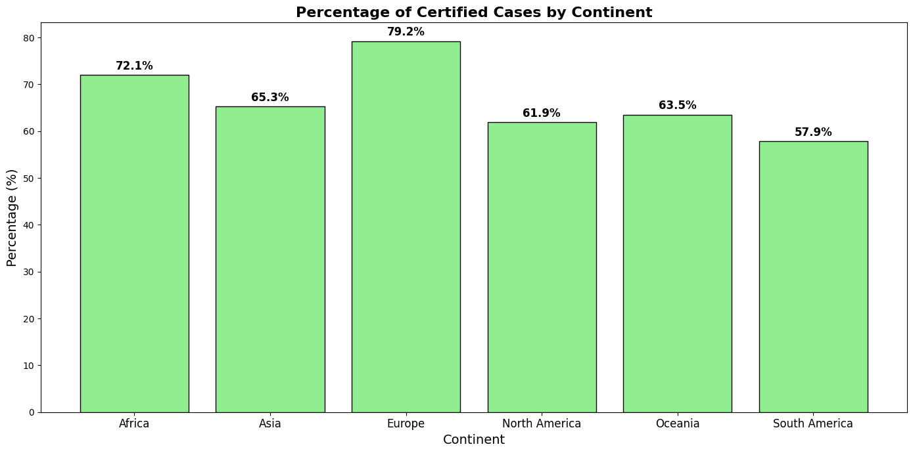
Insights:
* As per the Chart Asia applicants applied more than other continents.
* 43% of Certified applications are from Asia.
* This is followed by Europe with 11% of Certified applications.
* Highest chance of getting certified if you are from Europe and followed by Africa
Does the education of applicant has any impact on Visa status ?
(df.groupby('education_of_employee')['case_status'].value_counts(normalize=True).to_frame(name='percentage(%)')*100).round(2)| percentage(%) | ||
|---|---|---|
| education_of_employee | case_status | |
| Bachelor's | Certified | 62.21 |
| Denied | 37.79 | |
| Doctorate | Certified | 87.23 |
| Denied | 12.77 | |
| High School | Denied | 65.96 |
| Certified | 34.04 | |
| Master's | Certified | 78.63 |
| Denied | 21.37 |
plt.figure(figsize=(12, 6))
sns.countplot(data=df, x='education_of_employee', hue='case_status', palette='Accent', edgecolor='black')
plt.title('Education of Employee vs Visa Status', fontsize=16, fontweight='bold')
plt.xlabel('Education of Employee')
plt.ylabel('Count')
plt.legend(title='Visa Status', fancybox=True)
plt.show()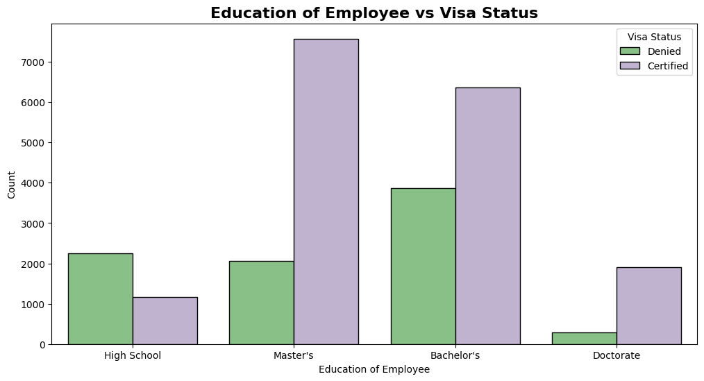
If we want to see only the certified cases by education, we can do the following process.
pct_df = pd.crosstab(df['education_of_employee'], df['case_status'], normalize='index') * 100
cert_pct = pct_df['Certified']
fig, ax = plt.subplots(figsize=(14, 7))
bars = ax.bar(cert_pct.index, cert_pct.values, color='lightgreen', edgecolor='black')
ax.bar_label(bars, fmt='%.1f%%', padding=3, fontsize=12, fontweight='bold')
ax.set_title("Percentage of Certified Cases by Education of Employee", fontsize=16, fontweight='bold')
ax.set_xlabel('Education of Employee', fontsize=14)
ax.set_ylabel('Percentage(%)', fontsize=14)
ax.tick_params(axis='x', rotation=0, labelsize=12)
fig.tight_layout()
plt.show()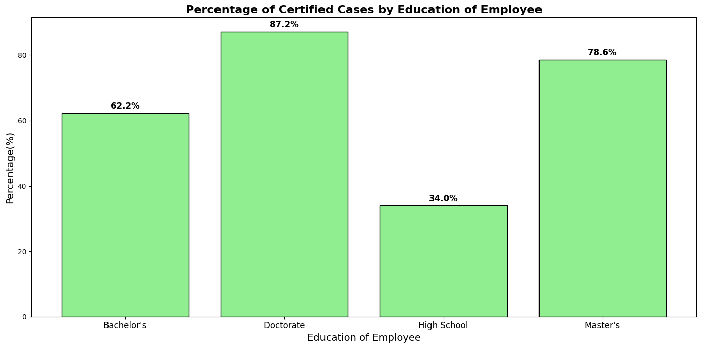
Insights
- education status has high impact
- Doctorate and Master's graduates have higher cange of being accepted then the others.
Does applicant’s previous work experience has any impact on Visa status ?
(df.groupby('has_job_experience')['case_status'].value_counts(normalize=True).to_frame(name='percentage(%)')*100).round(2)| percentage(%) | ||
|---|---|---|
| has_job_experience | case_status | |
| N | Certified | 56.13 |
| Denied | 43.87 | |
| Y | Certified | 74.48 |
| Denied | 25.52 |
plt.figure(figsize=(12, 6))
sns.countplot(data=df, x='has_job_experience', hue='case_status', palette='Accent', edgecolor='black')
plt.title('Job Experience vs Visa Status', fontsize=16, fontweight='bold')
plt.xlabel('Has Job Experience')
plt.ylabel('Count')
plt.legend(title='Visa Status', fancybox=True)
plt.show()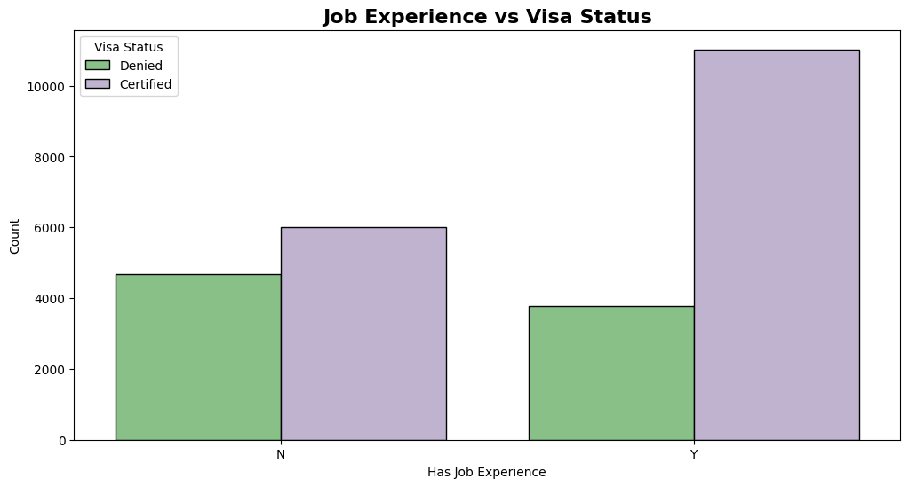
If we want to see only the certified cases by job experience, we can do the following process.
pct_df = pd.crosstab(df['has_job_experience'], df['case_status'], normalize='index') * 100
cert_pct = pct_df['Certified'].sort_values(ascending=False)
fig, ax = plt.subplots(figsize=(14, 7))
bars = ax.bar(cert_pct.index, cert_pct.values, color='lightgreen', edgecolor='black')
ax.bar_label(bars, fmt='%.1f%%', padding=3, fontsize=12, fontweight='bold')
ax.set_title("Percentage of Certified Cases by Job Experience", fontsize=16, fontweight='bold')
ax.set_xlabel('Has Job Experience', fontsize=14)
ax.set_ylabel('Percentage(%)', fontsize=14)
ax.tick_params(axis='x', rotation=0, labelsize=12)
fig.tight_layout()
plt.show()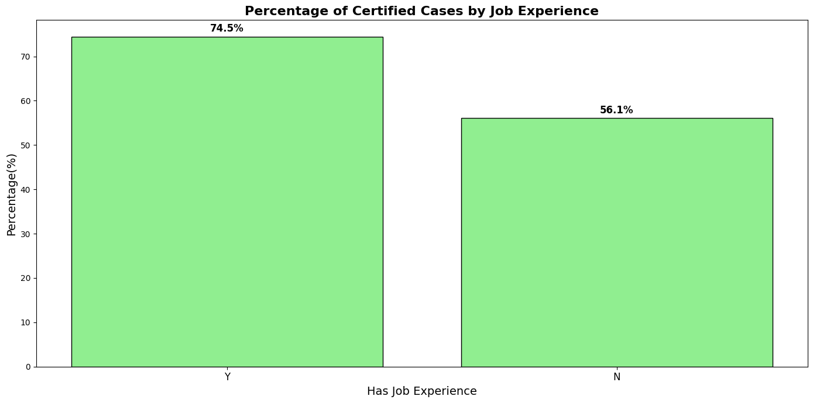
If the Employee requires job training, does it make any impact on visa status?
(df.groupby('requires_job_training')['case_status'].value_counts(normalize=True).to_frame(name='percentage(%)')*100).round(2)| percentage(%) | ||
|---|---|---|
| requires_job_training | case_status | |
| N | Certified | 66.65 |
| Denied | 33.35 | |
| Y | Certified | 67.88 |
| Denied | 32.12 |
plt.figure(figsize=(12, 6))
sns.countplot(data=df, x='requires_job_training', hue='case_status', palette='Accent', edgecolor='black')
plt.title('Job Training vs Visa Status', fontsize=16, fontweight='bold')
plt.xlabel('Requires Job Training')
plt.ylabel('Count')
plt.legend(title='Visa Status', fancybox=True)
plt.show()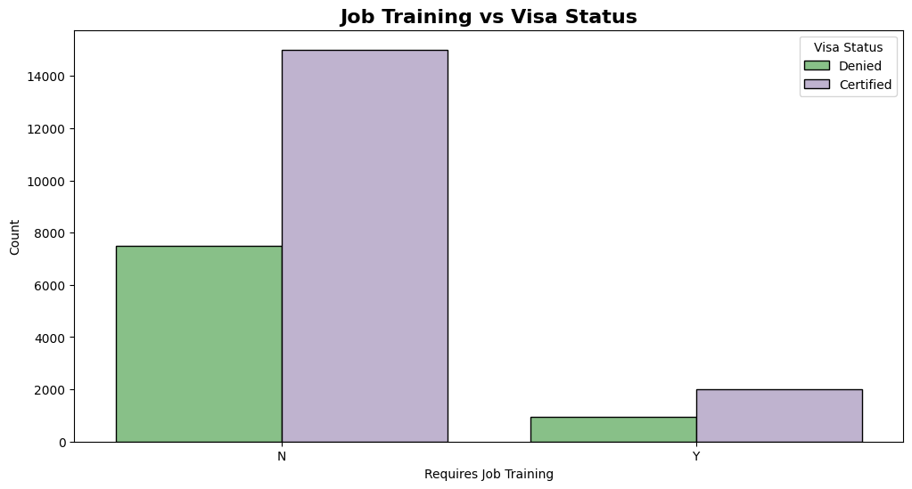
If we want to see only the certified cases by the requirement of job training, we can do the following process.
pct_df = pd.crosstab(df['requires_job_training'], df['case_status'], normalize='index') * 100
cert_pct = pct_df['Certified'].sort_values(ascending=False)
fig, ax = plt.subplots(figsize=(14, 7))
bars = ax.bar(cert_pct.index, cert_pct.values, color='lightgreen', edgecolor='black')
ax.bar_label(bars, fmt='%.1f%%', padding=3, fontsize=12, fontweight='bold')
ax.set_title("Percentage of Certified Cases by the Requirement of Job Training", fontsize=16, fontweight='bold')
ax.set_xlabel('Requires Job Training', fontsize=14)
ax.set_ylabel('Percentage(%)', fontsize=14)
ax.tick_params(axis='x', rotation=0, labelsize=12)
fig.tight_layout()
plt.show()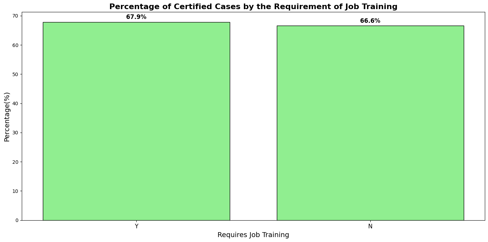
Wages and its impact on Visa status
(df.groupby('unit_of_wage')['case_status'].value_counts(normalize=True).to_frame(name='percentage(%)')*100).round(2)| percentage(%) | ||
|---|---|---|
| unit_of_wage | case_status | |
| Hour | Denied | 65.37 |
| Certified | 34.63 | |
| Month | Certified | 61.80 |
| Denied | 38.20 | |
| Week | Certified | 62.13 |
| Denied | 37.87 | |
| Year | Certified | 69.89 |
| Denied | 30.11 |
plt.figure(figsize=(12, 6))
sns.countplot(data=df, x='unit_of_wage', hue='case_status', palette='Accent', edgecolor='black')
plt.title('Percentage of Cases by Unit of Wage', fontsize=16, fontweight='bold')
plt.xlabel('Unit of Wage')
plt.ylabel('Count')
plt.legend(title='Visa Status', fancybox=True)
plt.show()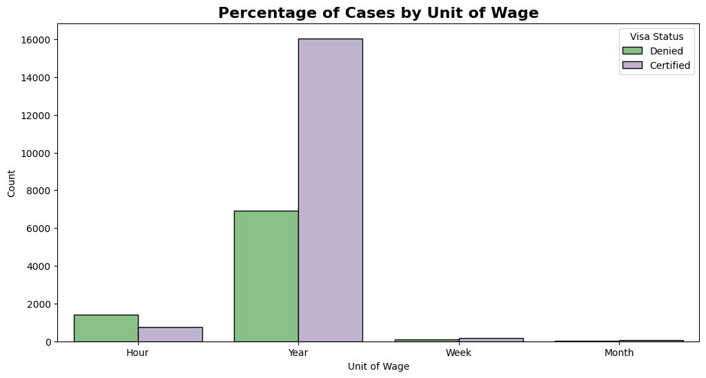
If we want to see only the certified cases by unit of wage, we can do the following process.
pct_df = pd.crosstab(df['unit_of_wage'], df['case_status'], normalize='index') * 100
cert_pct = pct_df['Certified'].sort_values(ascending=False)
fig, ax = plt.subplots(figsize=(14, 7))
bars = ax.bar(cert_pct.index, cert_pct.values, color='lightgreen', edgecolor='black')
ax.bar_label(bars, fmt='%.1f%%', padding=3, fontsize=12, fontweight='bold')
ax.set_title("Percentage of Certified Cases by Unit of Wage", fontsize=16, fontweight='bold')
ax.set_xlabel('Unit of Wage', fontsize=14)
ax.set_ylabel('Percentage(%)', fontsize=14)
ax.tick_params(axis='x', rotation=0, labelsize=12)
fig.tight_layout()
plt.show()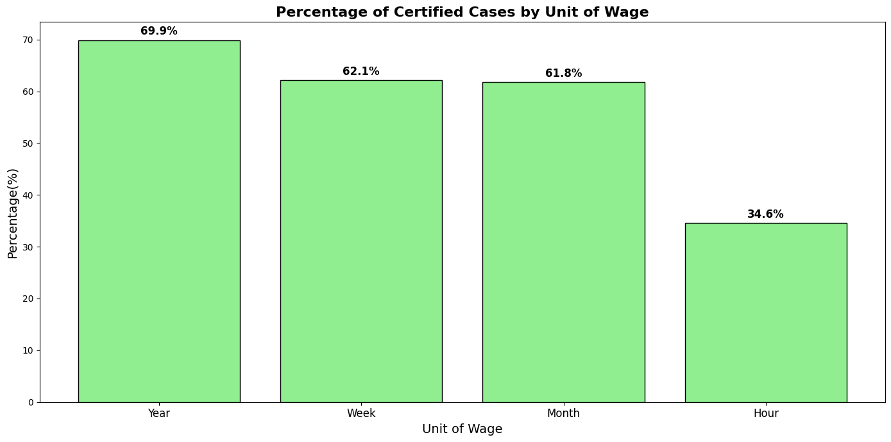
If we want to see how many duplicate values are there in the dataset, we can use the duplicated() method.
df.duplicated().sum()np.int64(0)There is no duplicate value in the dataset.
For Feature Engineering:
we need to focus on the following points
- Missing value - No
- Categorical handler - Yes
- Outlier - Yes
- Imbalance - Yes
- Duplicate - No
- Drop any column - Yes
- Scaling - Yes
- Transformation - Yes